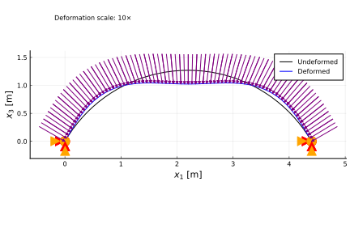

Static structural analysis of an arch under follower pressure
This example simulates the static response of a clamped arch subjected to a normal (follower) pressure. It illustrates how to set up a steady structural problem for an initially curved beam subjected to follower distributed loads. The problem was defined by Argyris and Symeonidis.
Clamped circular arch under normal pressure by Argyris and Symeonidis
The code for this example is available here.
Beam
The first step is to create a beam. The arch has radius R and spans over and angle θ. The curvature of the beam is thus 1/R, and the total length is L=Rθ. We define the beam orientation such that the arch spans from an angle -θ/2 to θ/2 about a vertical line. This is done by specifying the rotation parameters from basis A to basis b, p0, with the Euler parameters sequence 3-2-1: the angle of rotation about the second axis is -θ/2. The cross-section has area A and bending moment of inertia Iy. The elastic modulus of the material is E. We discretize the beam into nElem finite elements. In this case the properties of the beam are constant over its length, to see a case where those properties vary, check this example.
# Beam
using AeroBeams
R,θ = 2.54,120*π/180
k2 = 1/R
L = R*θ
A,Iy = 4.05e-4,13.1e-8
E = 70.4e9
EA,EIy = E*A,E*Iy
nElem = 40
beam = create_Beam(name="arch",length=L,nElements=nElem,C=[isotropic_stiffness_matrix(∞=1e12,EA=EA,EIy=EIy)],rotationParametrization="E321",p0=[0;-θ/2;0],k=[0;k2;0])BCs
Now we create the boundary conditions (including the pressure load). The normalized load is defined by the λ variable, and the maximum value of the actual distributed load per unit length is q. We add this constant load to the arch as a distributed follower force initially resolved in basis A. We then clamp both ends of the beam (nodes 1 and nElem+1) by setting the displacements and rotations to zero.
# BCs
λ = 11
q = -λ*EIy/R^2
add_loads_to_beam!(beam,loadTypes=["ff_b_of_x1t"],loadFuns=[(x1,t)->[0; 0; q]])
clamp1 = create_BC(name="clamp1",beam=beam,node=1,types=["u1A","u2A","u3A","p1A","p2A","p3A"],values=[0,0,0,0,0,0])
clamp2 = create_BC(name="clamp2",beam=beam,node=nElem+1,types=["u1A","u2A","u3A","p1A","p2A","p3A"],values=[0,0,0,0,0,0])Model
We are now ready to create the model itself. It is composed of the beam and the boundary conditions.
# Model
archUnderFollowerPressure = create_Model(name="archUnderFollowerPressure",beams=[beam],BCs=[clamp1,clamp2])System solver
We can set an optional system solver for the nonlinear algebraic system of equations resulting from the finite element discretization. In this case we choose to start with a load factor σ0 and increase it in steps σstep (up to the ultimate load factor of one). We then create a Newton-Raphson solver with these options.
# System solver
σ0 = 0
σstep = 0.02
NR = create_NewtonRaphson(initialLoadFactor=σ0,maximumLoadFactorStep=σstep)Problem
Now we define the steady problem, by inputting the model and our optional system solver, and then solve it.
# Problem
problem = create_SteadyProblem(model=archUnderFollowerPressure,systemSolver=NR)
solve!(problem)Post-processing
We are interested in the behavior of the arch's midpoint transverse displacement (in the x3 direction) as a function of the load. So we can get solution at all partial load steps. The array of the partial load factors is σVector, and the corresponding midpoint displacements are mid_u3.
# Unpack outputs
σVector = problem.savedσ
mid_u3 = [problem.nodalStatesOverσ[i][div(nElem,2)].u_n2[3] for i in 1:length(σVector)]The following plot shows the midpoint displacement as a function of the load.
using Plots
gr()
# Plot displacement
plot(-mid_u3/R, σVector*λ, color=:black, lw=2, xlabel="Midpoint \$-u_3/R\$", ylabel="\$\\lambda\$", label=false)Let's also plot the initial and final deformed shape of the arch (scaled ten-fold), along with the boundary conditions. To do that, we exploit AeroBeams' built-in visualization capabilities, by simply calling the plot_steady_deformation() function accordingly.
# Plot deformed shape
plot_steady_deformation(problem,scale=10,showScale=true,scalePos=[0.5,2.2])
This page was generated using Literate.jl.